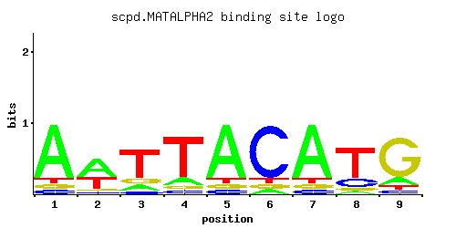
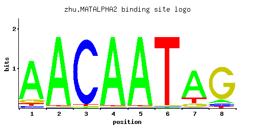
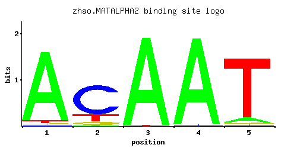

Homeobox-domain protein that, with Mcm1p, represses a-specific genes in haploids; acts with A1p to repress transcription of haploid-specific genes in diploids; one of two genes encoded by the MATalpha mating type cassette
01 / RECOMMENDED MATRIX
Best-performing DNA-binding model. Fisher’s P-value No data
Information content 13.3
Max PWM score 10.34
Recommended cutoff 7.76
View and copy the recommended matrices ↘ Position frequency matrix (PFM) Copy
A | 1.000 0.600 0.100 0.001 1.000 0.001 1.000 0.001 0.100
C | 0.001 0.001 0.001 0.001 0.001 1.000 0.001 0.200 0.001
G | 0.001 0.001 0.100 0.001 0.001 0.001 0.001 0.001 0.900
T | 0.001 0.400 0.800 1.000 0.001 0.001 0.001 0.800 0.001
Position count matrix (PCM) Copy
A | 100 60 10 0 100 0 100 0 10
C | 0 0 0 0 0 100 0 20 0
G | 0 0 10 0 0 0 0 0 90
T | 0 40 80 100 0 0 0 80 0
Position weight matrix (PWM) Copy
A | 1.14 0.63 -1.16 -5.77 1.14 -5.77 1.14 -5.77 -1.16
C | -5.19 -5.19 -5.19 -5.19 -5.19 1.71 -5.19 0.11 -5.19
G | -5.19 -5.19 -0.59 -5.19 -5.19 -5.19 -5.19 -5.19 1.61
T | -5.77 0.22 0.92 1.14 -5.77 -5.77 -5.77 0.92 -5.77
02 / COMPARATIVE BENCHMARKS
Alternative candidate matrices 3 Historical matrix candidates from the original ScerTF database. Expand a source to inspect its original logo, scores, and matrix values.
MATALPHA2 Zhu J and MQ Zhang P = No data View matrix ↘ 
Fisher’s P-value No data
Information content 6.119
Max PWM score 8.45
Recommended cutoff 6.34
Position frequency matrix (PFM) Copy
A | 0.07 0.67 0.07 0.07 0.07 0.73 0.67 0.33 0.07
C | 0.73 0.07 0.07 0.07 0.07 0.07 0.13 0.07 0.07
G | 0.07 0.20 0.07 0.80 0.07 0.07 0.07 0.07 0.07
T | 0.13 0.07 0.80 0.07 0.80 0.13 0.13 0.53 0.80
Position count matrix (PCM) Copy
A | 7 67 7 7 7 73 67 33 7
C | 73 7 7 7 7 7 13 7 7
G | 7 20 7 80 7 7 7 7 7
T | 13 7 80 7 80 13 13 53 80
Position weight matrix (PWM) Copy
A | -1.52 0.74 -1.52 -1.52 -1.52 0.82 0.74 0.03 -1.52
C | 1.40 -0.94 -0.94 -0.94 -0.94 -0.94 -0.33 -0.94 -0.94
G | -0.94 0.11 -0.94 1.49 -0.94 -0.94 -0.94 -0.94 -0.94
T | -0.90 -1.52 0.92 -1.52 0.92 -0.90 -0.90 0.50 0.92
MATALPHA2 Zhu et. al. P = No data View matrix ↘ 
Fisher’s P-value No data
Information content 10.74
Max PWM score 9.45
Recommended cutoff 7.09
Position frequency matrix (PFM) Copy
A | 0.84 0.97 0.01 0.97 0.97 0.01 0.75 0.08
C | 0.04 0.01 0.96 0.01 0.01 0.01 0.01 0.07
G | 0.08 0.01 0.01 0.01 0.01 0.01 0.10 0.82
T | 0.04 0.01 0.02 0.01 0.01 0.97 0.14 0.04
Position count matrix (PCM) Copy
A | 84 97 1 97 97 1 75 8
C | 4 1 96 1 1 1 1 7
G | 8 1 1 1 1 1 10 82
T | 4 1 2 1 1 97 14 4
Position weight matrix (PWM) Copy
A | 0.97 1.11 -3.47 1.11 1.11 -3.47 0.85 -1.39
C | -1.50 -2.89 1.67 -2.89 -2.89 -2.89 -2.89 -0.94
G | -0.81 -2.89 -2.89 -2.89 -2.89 -2.89 -0.59 1.52
T | -2.08 -3.47 -2.77 -3.47 -3.47 1.11 -0.83 -2.08
MATALPHA2 Zhao and Stormo P = No data View matrix ↘ 
Fisher’s P-value No data
Information content 6.562
Max PWM score 5.76
Recommended cutoff 4.32
Position frequency matrix (PFM) Copy
A | 0.936 0.020 0.989 0.985 0.069
C | 0.011 0.738 0.001 0.013 0.014
G | 0.018 0.074 0.001 0.001 0.018
T | 0.035 0.168 0.009 0.001 0.899
Position count matrix (PCM) Copy
A | 93 2 98 98 6
C | 1 73 0 1 1
G | 1 7 0 0 1
T | 3 16 0 0 89
Position weight matrix (PWM) Copy
A | 1.07 -2.77 1.13 1.12 -1.53
C | -2.80 1.41 -5.19 -2.63 -2.55
G | -2.30 -0.89 -5.19 -5.19 -2.30
T | -2.21 -0.64 -3.57 -5.77 1.03
03 / EXPERIMENTAL CONTEXT
Gene-level annotations and interactions. Genes bound in ChIP-chip experiments 1 genes No Data
Genes affected by TF deletion 1 genes No Data
Genes supported by both experiments 1 genes No Data